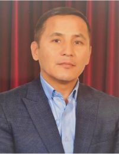
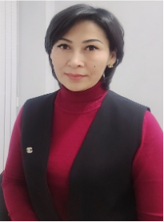
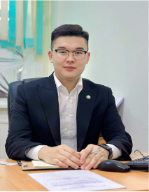
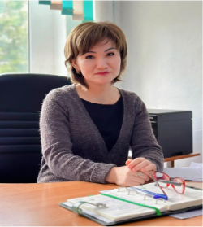
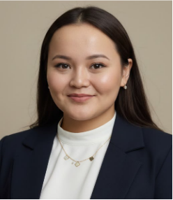
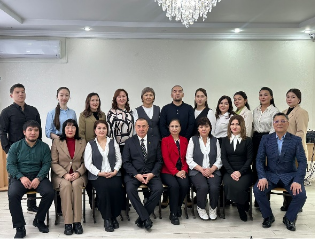
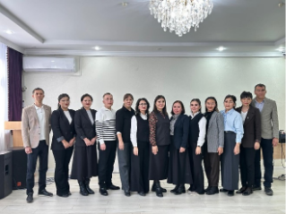
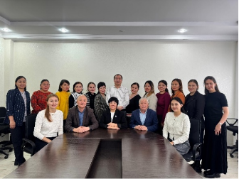

Колледж басшысы
- Бірінші санатты басшы, ветеринария ғылымдарының кандидаты
- Халықаралық ақпараттандыру академиясының академигі
- 2016-2022 жылдары Аккредиттеу және рейтингтің тәуелсіз агенттігінің сараптау кеңесінің мүшесі
- 2021 жылдан бастап ҚР техникалық және кәсіптік білім беру ұйымдары басшыларының Республикалық кеңесінің мүшесі

Басшының оқу жұмысы жөніндегі орынбасары
- Экономика ғылымдарының магистрі, бірінші санатты басшының орынбасары.
- «Талап» АҚ штаттан тыс тренері
- ТжКБ жүйесінің қызметін реттейтін нормативтік-құқықтық актілерді талқылау бойынша республикалық жұмысшы тобының мүшесі
- БҚО Білім басқармасының ТжКББҰ-ң директордың оқу ісі жөніндегі орынбасарларының жұмысшы тобының мүшесі

Басшының оқу-өндірістік жұмысы жөніндегі орынбасары
- Қазақстан Республикасы Ғылым және жоғары білім министрлігінің өңірлік студенттер мәселелері жөніндегі уәкілі
- Батыс Қазақстан облысы әкімінің жастар ісі жөніндегі кеңес мүшесі
- 2023 жылдан бастап Аккредиттеу және рейтингтің тәуелсіз агенттігінің эксперті

Басшының тәрбие ісі жөніндегі орынбасары
- Басшының үшінші санатты орынбасары
- Педагог-модератор
- «Қазақстан студенттерінің Альянсы» РСҚ білім беру ұйымдарын мониторингтеу комиссиясының мүшесі

Басшының ғылыми-әдістемелік жұмысы жөніндегі орынбасары
- Педагог-модератор, магистр
Колледжде 3 бөлім жұмыс жасайды. Әлеуметтік-гуманитарлық және жалпы білім беру бөлімі. Құрамына әлеуметтік-гуманитарлық, жалпы білім беретін пәндердің оқытушылары және негізгі орта білім базасында қабылданған 1-курс студенттері кіреді. Бөлімнің меңгерушісі Жумашева Лаура Амангелдиевна. Бөлімде Жалпы білім беру және әлеуметтік-гуманитарлық пәндерінің пәндік-циклдік комиссиясы жұмыс жасайды, төрағасы Адлешева Гулнур Амангалиевна.

Технология бөлімі. Құрамына 07240900-Мұнай және газ - кен орындарын пайдалану, 07110500-Мұнай және газды қайта өңдеу технологиясы, 07880100-Стандарттау, метрология және сертификаттау (салалар бойынша), 08410100-Ветеринария, 08110700-Балық шаруашылығы (түрлері бойынша), 07320600-Жергілікті магистральдық және желілік құбырларды монтаждау, 07210100-Ет және ет өнімдерін өндіру, 06130100 -Бағдарламалық қамтамасыз ету(түрлері бойынша), 06120100 - Есептеу техникасы және ақпараттық желілер (түрлері бойынша) мамандықтары бойынша арнайы пән оқытушылары мен 2-4 курс студенттері кіреді. Бөлімнің меңгерушісі Таутешова Бибинур Талгатовна. Бөлімде бейіндер бойынша 3 пәндік циклдік-комиссия жұмыс жасайды: Ауылшаруашылық пәндерінің циклдік комиссиясы, төрағасы Сарсекенова Толкын Адаевна; Мұнай-газ және құрылыс пәндерінің циклдік комиссиясы, төрағасы Акмалиева Азиза Біржанқызы; Ақпараттық пәндердің циклдік комиссиясы, төрағасы Болатова Альфия Саматқызы.

Экономика және сервис бөлімі. Құрамына 04210100 – Құқықтану, 04110100 - Есеп және аудит, 07130200-Электрмен қамтамасыз ету (салалар бойынша), 07161300-Автомобиль көлігіне техникалық қызмет көрсету, жөндеу және пайдалану, 10410300-Автомобиль көлігінде тасымалдауды ұйымдастыру және қозғалысты басқару, 07150100-Машина жасау технологиясы (түрлері бойынша) мамандықтары бойынша арнайы пән оқытушылары мен 2-4 курс студенттері кіреді. Бөлімнің меңгерушісі Ильясова Алина Ельтаевна. Бөлімде келесідей пәндік циклдік комиссиялар жұмыс жасайды: Экономикалық және құқықтық пәндерінің циклдік комиссиясы, төрағасы Ербулатова Айгерим Табылдиевна; Техникалық пәндердің циклдік комиссиясы, төрағасы Жолаева Мейрамгуль Бериковна.
